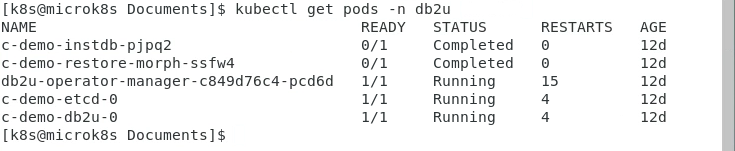

Cluster Authentication
When shifting a database to a containerized environment (OpenShift, Kubernetes, Cloud Pak for Data), the connection to the cluster must be established before running any Shift except for Cloning.
The ways to authenticate to a cluster are listed below, based on standard scenarios. Your installation may require different setup steps than those listed below.
Cluster Command Line Interface
In order to authenticate and execute commands against a cluster, you must have a copy
of the cluster CLI available on your source machine. For an OpenShift or Cloud Pak for Data
environment, download a copy of the OC command line interface from:
For Kubernetes distributions, you can download the code from:
You can also issue the following command from a Linux terminal window to download the code:
curl -LO "https://dl.k8s.io/release/$(curl -L -s https://dl.k8s.io/release/stable.txt)/bin/linux/amd64/kubectl"
Once the code has been downloaded, place the code into the local bin directory and make sure that it has been marked as executable.
chmod +x kubectl
mkdir -p ~/.local/bin
mv ./kubectl ~/.local/bin/kubectl
Authenticating to OpenShift
Before running the Db2 Shift command, you need to connect to the OpenShift cluster. If you are running Cloud Pak for Data, you must authenticate to the OpenShift cluster, not the CP4D services.
To connect to an OpenShift cluster, you can use one of two methods:
- Userid and Password
- Access token
The syntax of the connection command is:
oc login [server] --username=userid --password=pw --insecure-skip-tls-verify=true
The server field contains the IP address and PORT number to communicate with OpenShift:
https://10.1.1.1:8443
The port number could be 6443, 8443 or 16443 depending on the way the
cluster was created.
The TLS flag is used when working with internal clusters that have self-assigned certificates.
Note: The userid and password must be for an administrative user that has access to the Db2u project and the Db2 pods
If you are using a token for connecting to the cluster:
oc login [server] --token=averylongtokenidentifier --insecure-skip-tls-verify=true
To generate a login token, you must be logged into the load balancer for the OpenShift cluster. The token is generally created for you by the cluster administrator. However, if you have access to the cluster servers, you can generate a token using the following method.
Assume the load balancer for the cluster is 10.1.1.1.
-
Use secure shell connection to connect to the host
ssh root@10.1.1.1You will require the root/sysadmin password on the host as well as the OpenShift administrative userid and password.
-
Log in as the administrative user
oc login -u adminID -p adminPassword -
View the Configuration and extract the Token
oc config view --minify | grep tokentoken: LKtPjTxnwuvoX1aJw_xGpcca4wz6Cj5VsWFgzokmy30 -
The token is used in place of a userid/password when connecting
oc login https://10.1.1.1:8443 -t LKtPjTxnwuvoX1aJw_xGpcca4wz6Cj5VsWFgzokmy30
Note: Make sure that the token expiration is sufficient to cover the amount of time required to shift the database. The Db2 Shift command issues commands to the cluster at various stages of the shift process. Several hours could be spent moving data between the source and target and if the token expires during the period, the shift will fail because of authentication issues.
Authenticating to Kubernetes
The Kubernetes documentation provides examples of how to connect to a cluster. An administrator would grant access to a namespace and resources to a user.
If you have access to the cluster, you can generate the appropriate configuration file using the following steps:
-
Extract the Kubernetes configuration information from the cluster
kubectl config > configThe config file that is generated contains all the information required to connect to the Kubernetes cluster that is running on this server.
-
Copy the config file to the source database server
mkdir ~/.kubecp ~/Downloads/config ~/.kube/config -
Check the
kubectlcommand can connectThe kubectl command will search the hidden directory (
~./kube) for a file named config. If this file is found it will then use it for authenticating against the Kubernetes cluster.
Projects and Namespaces
The Db2 Shift command operates against Db2U pods that are running in a project or namespace. Openshift refers to projects, and Kubernetes refers to namespaces.
Before attempting to run any Db2 Shift command, you must first authenticate to the cluster and then connect to the proper project or namespace.
Use the following syntax to change to the Db2 project.
-
OpenShift
oc project db2u -
Kubernetes
kubectl config set-context --current --namespace=db2u
You can also specify which project or namespace to use when using the Db2 Shift command:
--project=db2u --namespace=db2u
If you do not supply a namespace or project in the Db2 Shift command, it will issue cluster commands assuming it is in the correct project. You will end up with errors being generated during execution since resources (pods) will not be found in the current namespace.
PODS and Projects
In order to refer to a Db2 POD, three pieces of information are required:
- Project - Which project or namespace was the Db2U POD created under
- Name - High-level name of the PODS in a deployment
- POD Name - The Db2U POD name
The output from a kubectl get pods -n db2u command is shown below.

The YAML used to create the Db2U deployment provides information on how the Db2U POD name was generated.
apiVersion: db2u.databases.ibm.com/v1
kind: Db2uCluster
metadata:
name: demo
namespace: db2u
spec:
account:
privileged: true
environment:
dbType: db2oltp
instance:
password: db2oltp
ldap:
enabled: false
database:
name: DB2OLTP
The metadata:name is a unique qualifier for all of the PODS that make up the Db2u
deployment. This name must be unique for every Db2U that is created.
The metadata:namespace is the namespace of project that Db2U will be deployed into.
You can have many Db2U PODS created in the same namespace.
Finally, the name of the database field database: name is DB2OLTP and this will be required when
entering the details of the target database being replaced.
A sample Db2 Shift dialog (Shift from Instance to POD) illustrates the fields that need to be filled in.

The fields that are required from a destination perspective are:
- Target Location - OpenShift or Kubernetes
- Database Name -
db2oltp(database:name) - POD Project -
db2u(metadata:namespace) - POD Name -
c-demo-db2u-0
The POD name can be retrieved from the kubectl command above or derived as:
c- metadata:name -db2u-0 or c-demo-db2u-0
Once you have these details available, you will be able to fill in the fields on the Db2 Shift dialog and begin the shift process.